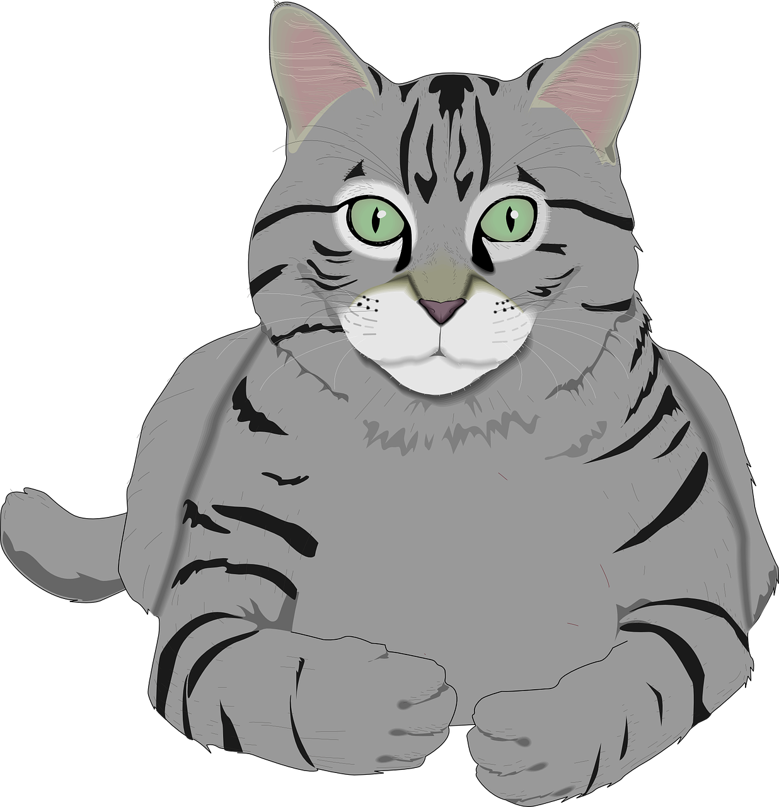
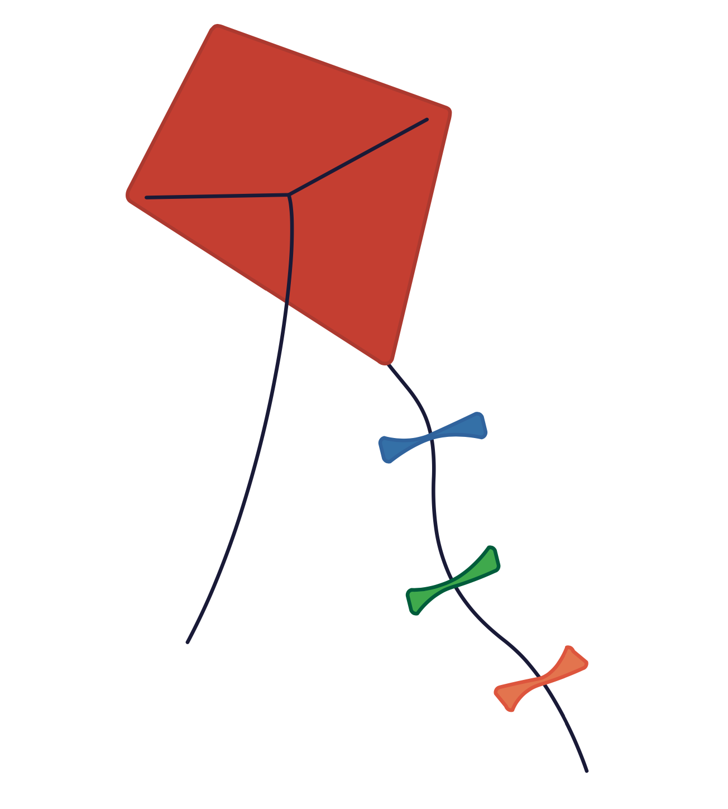
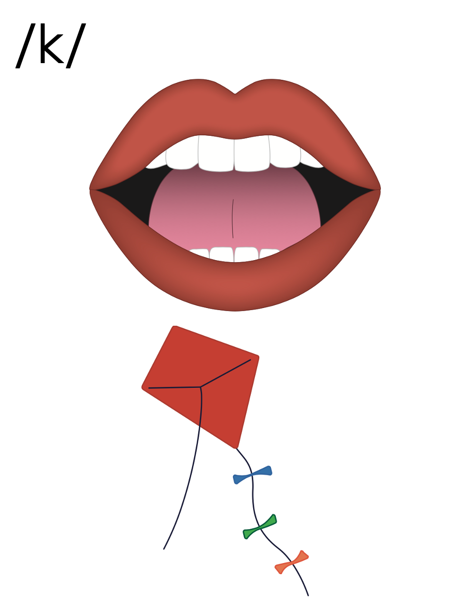
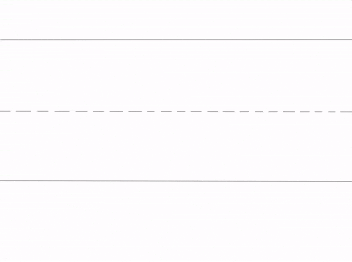
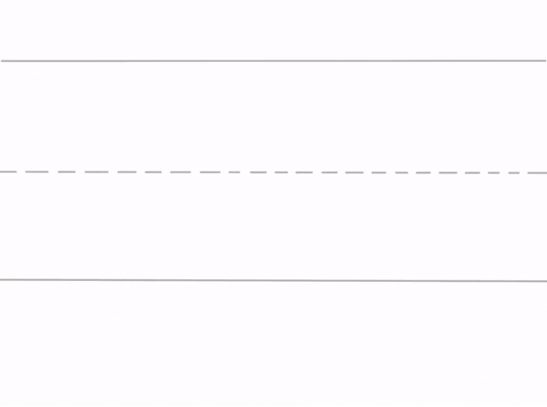

Lesson 22
k /k/

ufliteracy.org


Lesson 22
k /k/


See UFLI Foundations lesson plan Step 1 for phonemic awareness activity.


See UFLI Foundations lesson plan Step 2 for student phoneme responses.


s
e
b
g
u
c
d
o
n
i
f
p
t
m
a


See UFLI Foundations lesson plan Step 3 for auditory drill activity.

No slides needed for auditory drill.


See UFLI Foundations lesson plan Step 4 for blending drill word chain and grid.
Visit ufliteracy.org to access the Blending Board app.


See UFLI Foundations lesson plan Step 5 for recommended teacher language and activities to introduce the new concept.
c

k

beginning
middle
end
kid
kit
k
k
s
s k i p
d e s k

c
k



Uppercase K gif

Lowercase k gif

kit
desk

kin
kit
kids
skim
skit
skin

See UFLI Foundations lesson plan Step 5 for words to spell.
Handwriting paper to model spelling.

See UFLI Foundations lesson plan Step 5 for words to spell.
Handwriting paper for guided spelling practice.


Insert brief reinforcement activity and/or transition to next part of reading block.

Lesson 22
k /k/

New Concept Review

See UFLI Foundations lesson plan Step 5 for recommended teacher language and activities to review the new concept.
c
k
beginning
middle
end
kid
kit
k
k
s
s k i p
de s k
c
k
Lowercase k gif
kid
kit
skip
desk


See UFLI Foundations lesson plan Step 6 for word work activity.
Visit ufliteracy.org to access the Word Work Mat apps.


See UFLI Foundations lesson plan Step 7 for irregular word activities.
The white rectangle under each word may be used in editing mode. Cover the heart and square icons then reveal them one at a time during instruction.

See UFLI Foundations manual for more information about reviewing irregular words.

said
Lesson 13+
AI represents the /ĕ/ sound.
The white rectangle under the word may be used in editing mode. Cover the heart and square icons then reveal them one at a time during instruction.
to
Lesson 15+
O represents the /ū/ sound.
The white rectangle under the word may be used in editing mode. Cover the heart and square icons then reveal them one at a time during instruction.
do
Lesson 15+
O represents the /ū/ sound.
The white rectangle under the word may be used in editing mode. Cover the heart and square icons then reveal them one at a time during instruction.
of
Lesson 17+
O represents the /ŏ/ sound.
F represents the /v/ sound.
The white rectangle under the word may be used in editing mode. Cover the heart and square icons then reveal them one at a time during instruction.
see
Lessons 19-84
*Temporarily irregular
EE /ē/ has not been introduced yet.
The white rectangle under the word may be used in editing mode. Cover the heart and square icons then reveal them one at a time during instruction.
Teach
The orange star indicates these are new irregular words that need to be introduced.
See UFLI Foundations manual for more information about teaching irregular words.
ask
Lessons 22-77AUS
*Temporarily irregular
A /ar/ has not been introduced yet.
The white rectangle under the word may be used in editing mode. Cover the heart and square icons then reveal them one at a time during instruction.
fast
Lessons 22-77AUS
*Temporarily irregular
A /ar/ has not been introduced yet.
The white rectangle under the word may be used in editing mode. Cover the heart and square icons then reveal them one at a time during instruction.
Handwriting paper for irregular word spelling practice. Use as needed.
See UFLI Foundations manual for more information about reviewing irregular words.


See UFLI Foundations lesson plan Step 8 for connected text activities.
The kids skip.
I ask Kat to get the kit.
I can see dust on the
desk.
See UFLI Foundations lesson plan Step 8 for sentences to write.

The UFLI Foundations decodable text is provided here. See UFLI Foundations decodable text guide for additional text options.
Kip is the Best Pup
Kip is the best pup.
Kip digs.
Kip skips.
Kip sits in the sun.
Dad gets a disk.
Dad spins the disk up, up, up.
“Kip, get the disk,” said dad.
Kip is fast. Kip can see the disk.
But Kip did not see the mud.
“Stop, Kip!,” Dad said.
But Kip can not stop.
Kip skids into the mud.
Dad gets Kip and the disk in the tub.

Insert brief reinforcement activity and/or transition to next part of reading block.